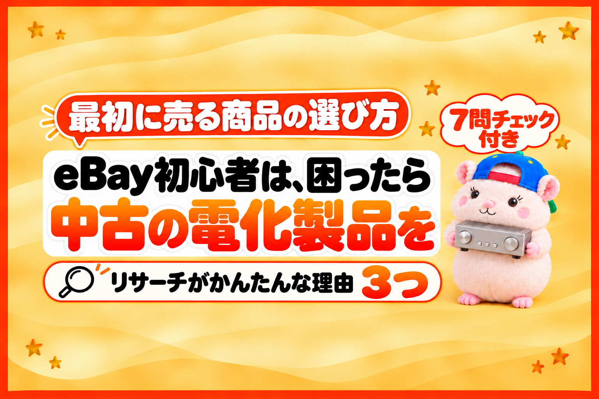

eBay初心者は、中古の電化製品を出品するのがおすすめです。
理由は、リサーチがかんたんだから。
なぜかんたんなのか。
メーカー＋型番で商品が1つに決まって、しかも利益が出やすいからです。
例えば、ぼくが以前、eBayで月の利益200万円弱を出していたとき。
中心にしていたのが、中古の電化製品でした。
同じ金額になるとは約束しません。
ただ、何を売るか迷ったときの「最初の1つ」としては、いまでもいちばんおすすめです。
この記事では、リサーチがかんたんな理由を3つと、はじめに気をつける3つ、仕入れる前に使えるチェックリストを書きます。
理由①: メーカー＋型番で、同じ商品が見つかる
型番があれば、同じ商品が1つに決まる
電化製品には、メーカー名と型番があります。
例えば「SONY EV-S350」のような。
eBayのリサーチは、こういう流れです。
- eBayで売れた商品の履歴を見る
- 同じ商品が、仕入元にあるかを調べる
- 値段の差で、利益が出るかを確かめる
このとき、メーカー＋型番があると、2の「同じ商品か」が一発で決まります。
型番で検索すれば、eBayでも仕入元でも、同じ商品が出てくるからです。
逆に、型番のないものを考えてみてください。
例えば、盆栽鉢。
eBayで、ある盆栽鉢が売れていたとします。
でも、これと同じ鉢を見つけるのは、むずかしいです。
- そもそも、なんと検索すればいいかわからない
- 仕入元のページにたくさん出てくる鉢の中から、同じものを探すのもむずかしい
- 「似ている」のか「同じ」なのか、見分けがつかない
型番があるかないかで、リサーチの手間はまるで変わります。
理由②: 状態は「動くか、動かないか」
例えば、ブランド品。
ブランド品は、状態で価値が大きく変わります。
キズ、汚れ、におい、角のすれ。
状態がちがえば、ちがう商品といってもいいくらいです。
一方で、電化製品が大事にするのは、基本はこれだけです。
動くか、動かないか。使えるか、使えないか。
もちろん見た目も見ます。
でも、値段を大きく分けるのは「動作するかどうか」です。
だから、売れた履歴を見るときも、
- 動作品として売れたのか
- ジャンク(動かない・部品取り)として売れたのか
の2つに分けて見れば、利益の計算がぶれにくくなります。
理由③: 外注にも、AIにも任せやすい
さらに言うと、型番がある商品は、リサーチを人やAIに任せやすいです。
商品を特定しやすいので、やることがはっきりするからです。
「この型番を、eBayと仕入元で調べて、動作品の値段を比べる」で、だれがやっても同じ答えになります。
型番のない商品で、外注さんにリサーチをお願いするとどうなるか。
「似たような盆栽鉢で、利益が出ます」と出品される。
でも、同じ鉢ではないので、売れない。
売れないのに、外注費はかかる。
これでは、ダメです。
AIにリサーチを任せるときも同じです。
型番があれば、あいまいさがなくなります。
同じ商品の中で「動くか、動かないか」で分けて、リサーチから出品まで進められます。
例えば、ぼくの店では、リサーチから出品までAIに任せています。
※eBay Japanに書面で確認した範囲(公式のAPIを使う・買い手の個人情報をAIに渡さない・AIでブラウザからeBayの画面を開かない)でやっています。
どこまで任せるかは、各サービスの規約を確かめたうえで、ご自身の責任で決めてください。
なぜ「中古」なのか
新品は、だれでも同じ商品をかんたんに、安定して手に入れられます。
それは、日本の競合のセラーも同じです。
仕入れやすいうえに、いつでも同じ商品が手に入る。
だから、一度出品してしまえば、ずっとeBayに出品された状態になります。
新品の競合は、増える一方です。
加えて、海外の人も、自分の国のお店で買えてしまいます。
これでは、利益が出にくいです。
中古は、ちがいます。
中古は、仕入れられる商品がどんどん変わります。
同じ商品が、いつも手に入るとはかぎりません。
だから、競合がずっと出品しつづけることがありません。
新品のように、競合が増える一方にはならないのです。
ひとつだけ例外があります。
製造中止になった商品なら、新品でもOKです。
もう新しく作られないので、中古と同じく、ずっと仕入れつづけることができないからです。
中古で気をつけること
中古で気をつけるのは、状態です。
とくにブランド品は、さきほど書いたとおり、状態で価値が大きく変わります。
だからこそ、初心者には「動くか、動かないか」で分けやすい電化製品がおすすめです。
中古の電化製品で、はじめに気をつける3つ
電化製品は、海外の家で使われます。
だから、日本で動くだけでは足りないことがあります。
はじめに気をつけるのは、この3つです。
- 電圧
- リージョン(地域の制限)
- 10kgをこえるようなデカオモ
①電圧: 日本は100V、海外はちがう
日本のコンセントは100Vです。
海外は、ちがいます。
- アメリカ: 120V
- ヨーロッパの多く: 220V前後
- オーストラリア: 240V前後
日本向けの「AC100V」の家電を海外で使うには、変圧器を用意する必要があります。
それでも、まれに故障や不具合になることもあります。
確かめるのは、本体の裏やACアダプターの表示です。
- 「AC100-240V 50/60Hz」 → 海外の電圧にも対応
- 「AC100V」だけ → 日本の電圧だけ(変圧器が必要)
eBayで外国から電化製品を買う人は、電圧のことを分かったうえで買う人が多いです。
とはいえ、ちゃんと書いておく必要はあります。
「AC100V」だけの商品を出品するなら、商品説明に「日本の100V仕様です。使うには変圧器が必要です」とはっきり書きます。
書いていないと、届いてから「使えない」になります。
②リージョン: DVD・ブルーレイ・ゲームは、地域で制限がある
DVD・ブルーレイ・ゲームには、売られた地域でしか再生・プレイできない決まりがあります。
これを「リージョン」といいます。
DVD
- 日本は「2」、アメリカ・カナダは「1」
- 番号が合わないと、再生できません
- さらに、テレビの方式(日本はNTSC、ヨーロッパの多くはPAL)のちがいもあります
ブルーレイ
- 日本とアメリカは同じ「A」
- ヨーロッパ・オーストラリアは「B」
ゲーム
機種ごとに、まったくちがいます。
- ニンテンドー3DS: 日本向けの本体では、海外のソフトは遊べません
- Nintendo Switch(初代): 海外のパッケージ版も動きます(ただし、任天堂の動作保証の対象外)
- Nintendo Switch 2の「日本語・国内専用」: 国/地域が「日本」のニンテンドーアカウントでしか使えません
eBayのDVD・ブルーレイには「Region Code」の絞り込みがあって、買い手もここを見ています。
出品するときは、リージョンを必ず書きます。
ゲームは、機種ごとにメーカーの公式サポートで確かめてから出品します。
例えば、ぼくの店でも、DVDを再生する機械が海外で再生できず、返品の相談が続いたことがあります。
いまは、DVDを再生する機械は出品していません。
③10kgをこえるデカオモは、はじめはやめる
10kgをこえるような、大きくて重い商品(デカオモ)は、はじめはやめておきます。
理由は、輸送中の故障につながりやすいから。
海外への荷物は、何度も積みかえられて、長い距離を運ばれます。
重いものほど、落ちたりぶつかったりしたときの衝撃が大きくなります。
中古の電化製品は、なおさらです。
動作品として送ったのに、届いたら動かない。
これでは、返品と返金で、利益がまるごと消えてしまいます。
まずは、小さくて軽い電化製品からはじめて、梱包に慣れてから大きいものへ進めばOKです。
仕入れる前の7問チェック(コピーして使えます)
仕入れようか迷った商品で、7つとも「はい」になるか確かめてください。
- メーカー名と型番がありますか?
- その型番で検索すると、eBayで売れた履歴が出てきますか?
- 状態を「動く・動かない」で言えますか?
- 中古、または製造中止の商品ですか?(いまも新品がふつうに買えるものではない)
- 電圧の表示(AC100-240Vなど)を確かめましたか?
- DVD・ブルーレイ・ゲームなら、リージョンを確かめましたか?(関係ない商品は「はい」でOK)
- 10kg以下ですか?
7つとも「はい」なら、初心者でもリサーチしやすく、トラブルも少ない商品です。
1が「いいえ」なら、いったん見送ってOKです。
eBayのやり方の全体(アカウント作りから発送まで)は、こちらにまとめています。

まとめ
eBay初心者は、困ったら中古の電化製品を。
リサーチがかんたんな理由は3つです。
- メーカー＋型番で、同じ商品が見つかる
- 状態は「動くか、動かないか」で分けられる
- 外注にも、AIにも任せやすい
そして、新品より中古。
製造中止の商品なら、新品でもOKです。
はじめのうちは、電圧・リージョン・10kgをこえるデカオモの3つに気をつけてください。
これは、ぼくが以前、eBayで月200万円弱を出していたときのやり方そのままです。
今日は、eBay初心者に向けての記事でした。
もし評判がよければ、また初心者向けのおすすめを書いていきます🐹
あなたの家に、型番のついた使っていない電化製品、ありませんか?
▼中の人🏠(レンタルスペース23部屋・売上1.5億)のレンスペ実録

▼ブログ(eBay×レンスペ、全記事まとめ)

▼この店のやり方は、ぜんぶ1冊にまとめてあります
リサーチ・出品・値付け・顧客対応まで、初月利益10万4,286円を出した実店舗の記録と手順を全部書いた教科書です。
読んだその日から、AI社員の作り方をそのまま真似できます。
『AI × eBay輸出の教科書 — 梱包以外、ぜんぶAI』


🎁 2026年10月22日に第3版になりました。顧客対応 完全自動化ツール・ストアドクター・AI自動化コーチなど付録6つは、これまでに買った人も含めて購入者全員に無料で受け取れます。
内容・最新価格は販売ページをご確認ください。